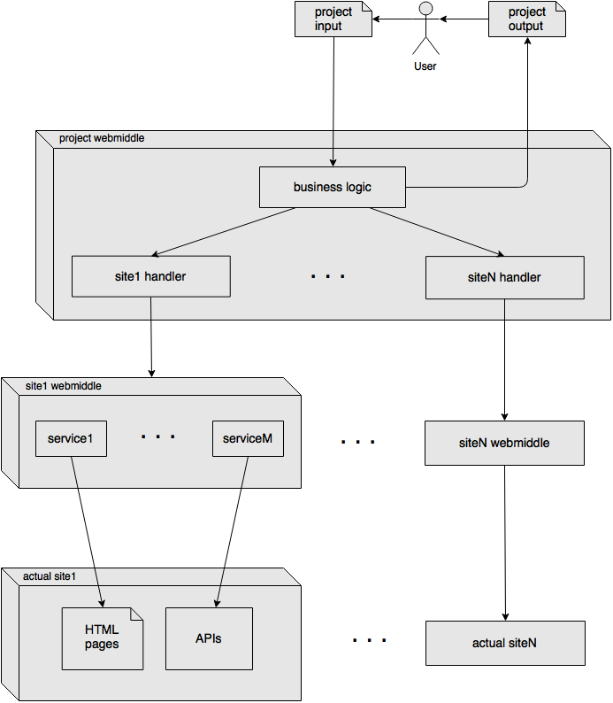

Documentation
Learn how to use the framework effectively.
Multiple layers

The main reason for supporting multiple layers is separation of concerns, the idea for webmiddle is, as the name “web middleware” suggests, to create several layers of middlewares one on top of another.
Layers:
1) The actual site, it is generally non-semantic, e.g. a bunch of HTML pages. Sometimes can provide APIs for all or only certain areas of the site, these APIs allow developers to have access to the site content in a highly semantic format.
2) The site webmiddle, i.e. a group of webmiddle services for each of the site page / area. Internally the services can use HTML scraping, APIs or a mix of both. Its job is just to take the minimal steps needed to make the site content semantic.
3) The project webmiddle. It uses several site webmiddles to perform the actual application task, e.g. extract a list of articles given a search query.
Is important to note that the services of the site webmiddle will return resources in some format, which will be different from site to site, as they will be often developed by different users and since they serve a more general and broader scope.
In the other end, in the project webmiddle we want the output of every site to follow the same fixed format, so to be able to merge the output of each site into the final output.
This means that the project webmiddle is composed of two parts:
The general business logic that, given the input (e.g. a search query), calls every site handler with such input, expecting the output to follow a fixed format which is the same for every site. The outputs are then merged into the final output.
The site handler, which wraps the site webmiddle to convert the project input into the site input and the site output into the project output.
This separation of concerns might seem cumbersome, but it makes possible to reuse the same site webmiddle in all sorts of projects, by writing wrappers that are often small and that in any case are wrapping content which is already semantic and supposedly well documented (differently than HTML pages).
This approach becomes less useful in case of small sites, sites that aren’t very popular or just in case of quick prototypes, while it becomes much more useful in case of popular sites for which its site webmiddle is already available.
Anyway, layers (2) and (3) can also be merged into a single layer, so that the site handler directly does the HTML and API calls instead that wrapping existing services for the site.